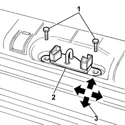

7015A10 tailgate - adjust striker and adapt seal if necessary
- Path
- Procedures > 70 FITTINGS > 7015 TAILGATE/ > 7015A tailgate assembly > 7015A10 tailgate - adjust striker and adapt seal if necessary
- Kind
- repair procedure (removal / refitting; the operation number is the code)
- Applies to
- all engines; all production periods
- Interactive page
- https://sloeber94.github.io/elrnDB-fDbl/en/#/2585031
Applies to: all engines; all production periods; only with equipment: Doblò trim level
1. Loosen the striker retaining screws.
2. Move the striker into the correct position, using the slotted holes on the striker.
3. Permitted adjustment movements are indicated by arrows.

Applies to: all engines; all production periods; only with equipment: Doblò trim level
Check the striker is perfectly aligned with the tail-gate lock.
Tighten the striker bolts to torque.